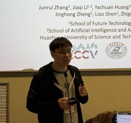

ABOUT
I am a Senior Research Scientist on the Visual Generation team at Tencent Hunyuan, working on generative world models, interactive video generation, and 3D visual understanding.
About on Notion ↗
I am a Senior Research Scientist on the Visual Generation team at Tencent Hunyuan, working on generative world models, interactive video generation, and 3D visual understanding.
About on Notion ↗